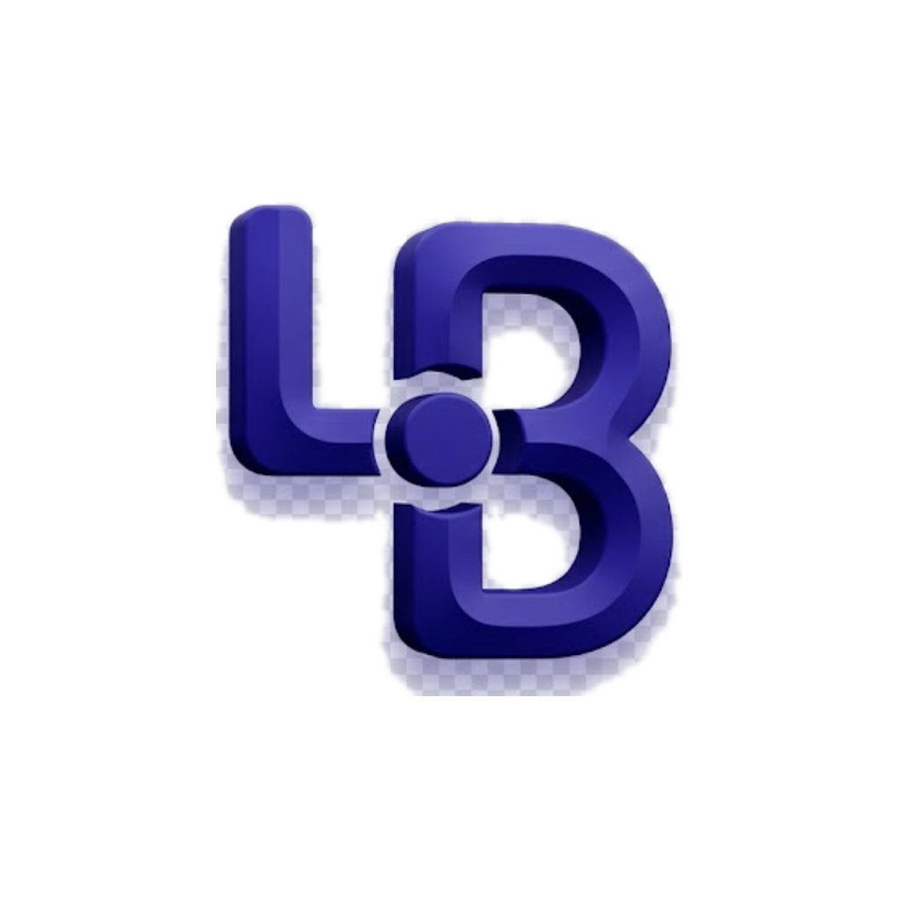
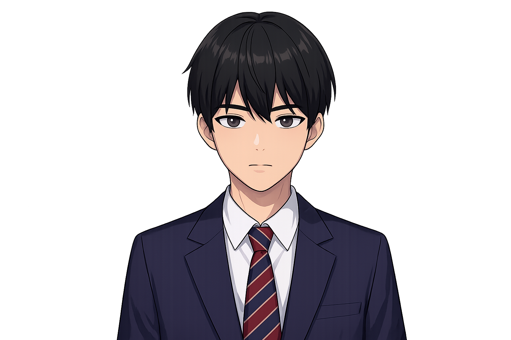
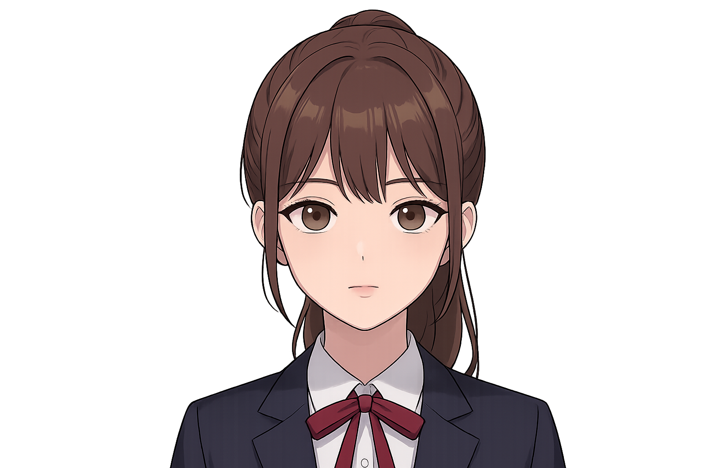
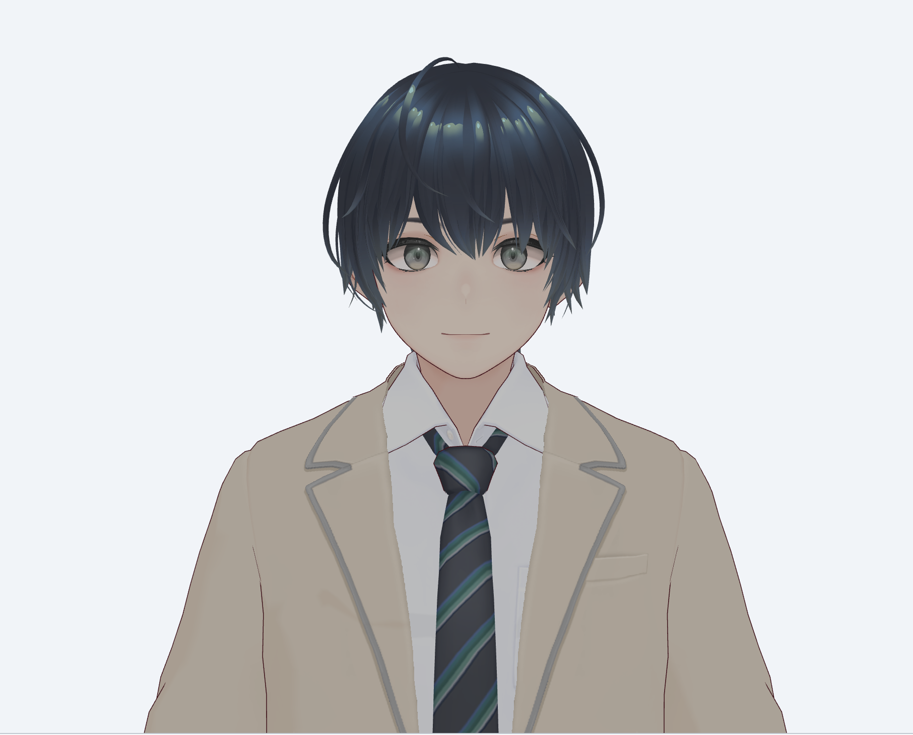
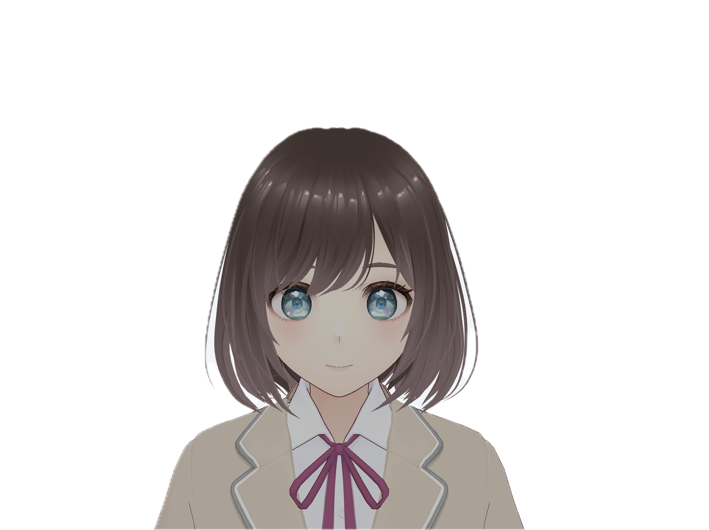

Live Buddy시청자 채팅을 실시간으로 읽고, AI 캐릭터가 직접 반응하고, OBS 오버레이까지 자동으로 맞춰주는 1인 방송용 콘솔입니다. 음성 인식(STT) 모델이 앱에 내장되어 별도 설치 없이 바로 시작할 수 있습니다.

게임하랴 채팅 보랴 정신없는 1인 스트리머. 버디가 채팅을 읽고 대신 반응해 줍니다. 설정한 단축키로 음성 대화가 가능합니다.
아직 시청자가 적어 채팅이 뜸할 때, AI 캐릭터가 방송 분위기를 살려줍니다. AI가 채팅에 자연스럽게 반응하며 방송을 함께 이끌어갑니다.
WebP 캐릭터 이미지에 페르소나와 음성을 입혀 OBS 오버레이로 바로 송출합니다. 2D와 3D VRM을 모두 지원합니다.
대시보드를 열면 방송 상태, 채팅, AI 캐릭터, OBS 오버레이, STT, 통계가 한 곳에. 창을 전환할 필요가 없습니다.
동네 친구, 텐션 폭발, 깐족 요정, 전문 매니저, 과몰입 장인. 각 페르소나마다 말투·성격·말속도까지 세밀하게 커스텀 가능합니다.
흘러가는 채팅을 실시간으로 읽어 긍정·중립·부정 여론을 분석하고, 반응할 만한 메시지를 골라 응답합니다. 분당 채팅 속도, 주요 키워드 Top 10, 여론 흐름 그래프까지 제공합니다.
OBS Browser Source와 연동해 투명 오버레이를 자동 셋업합니다. 캐릭터 이미지, AI 말풍선, 감정 상태가 송출 화면에 바로 얹힙니다. 위치·크기 프리셋도 저장 가능.
Faster Whisper 기반 로컬 STT 모델이 앱에 내장되어 별도 설치 없이 바로 동작합니다. Push-to-Talk(Ctrl+M)로 말하면 텍스트로 변환되어 AI가 함께 듣습니다. 음성이 외부로 나가지 않습니다.
중요한 채팅을 스트리머가 놓치면 AI가 먼저 반응합니다. 대화 공백이 감지되면 맥락에 맞는 대화나 가벼운 콘텐츠로 방송을 이어줍니다. 민감도와 빈도는 설정 가능.
치지직 등 다양한 플랫폼과 연동하여 방송을 시작할 수 있습니다. OBS와 연동해 한 번의 설정으로 여러 플랫폼에 동시 송출 가능합니다.
커스텀 금지어 필터링으로 채팅 입력과 AI 응답 양쪽을 모두 검사합니다. 부적절한 내용은 자동 탐지되어 차단되고, AI의 응원·비판 강도도 세밀하게 조절할 수 있습니다.
날짜별 방송 흐름을 타임라인으로 다시 봅니다. 스트리머 대화, AI 응답, 채팅 여론, 게임 이벤트를 통합 조회하여 다음 방송 전략을 세울 수 있습니다.
각 페르소나는 고유한 말투와 반응 스타일을 가집니다. 방송 컨셉에 맞는 캐릭터를 선택하고, 말투·성격·말속도까지 세밀하게 조절하세요.
무난하고 편안한 국밥 포지션. 적당한 딴지와 밈으로 티키타카.
방송 분위기를 멱살 잡고 끌어올리는 포지션. 큰 리액션, 풍부한 감정.
스트리머를 긁거나 팩폭. 실수를 놓치지 않고 놀리는 장난기.
선 넘는 채팅 진정, 정보 전달. 차분하고 신뢰감 있는 진행.
게임 세계관에 동화. 농담보다 분위기와 몰입감 우선.
방송 스타일에 맞는 캐릭터 형태를 선택하세요. 2D는 가볍고 빠르게, 3D는 입체감 있게 송출 화면에 표시됩니다.

여성WebP 이미지 기반의 가벼운 2D 캐릭터입니다. 감정 상태에 따라 이미지가 전환되며, OBS 오버레이에 최적화되어 있어 CPU 부하가 적습니다. 남성/여성 프리셋을 모두 제공합니다.

남성
여성VRM 형식의 3D 아바타입니다. Three.js 기반 렌더링으로 웹 오버레이에서도 입체감 있는 캐릭터를 표시할 수 있습니다. 외형 커스터마이징과 모션도 확장 예정입니다.
STT 모델이 앱에 내장되어 있어 별도 설치 없이 바로 시작할 수 있습니다.
Windows: Intel GPU 환경에서는 STT 모델이 동작하지 않습니다. NVIDIA GPU가 필요합니다.